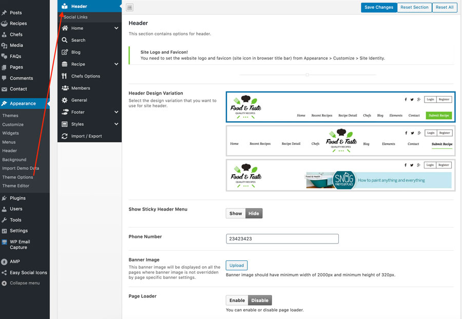

Header - Theme Options
Navigate to Appearance > Theme Options > Header and you will find various easy to understand options related to header.
- You can select header style from three different options.
- You can enable/disable sticky header menu.
- You can upload your website favicon.
- You can upload your website logo.
- You can provide social profile URLs using icons.
- You can enable page loader option. It will show default loader. You can also upload your own gif file.
